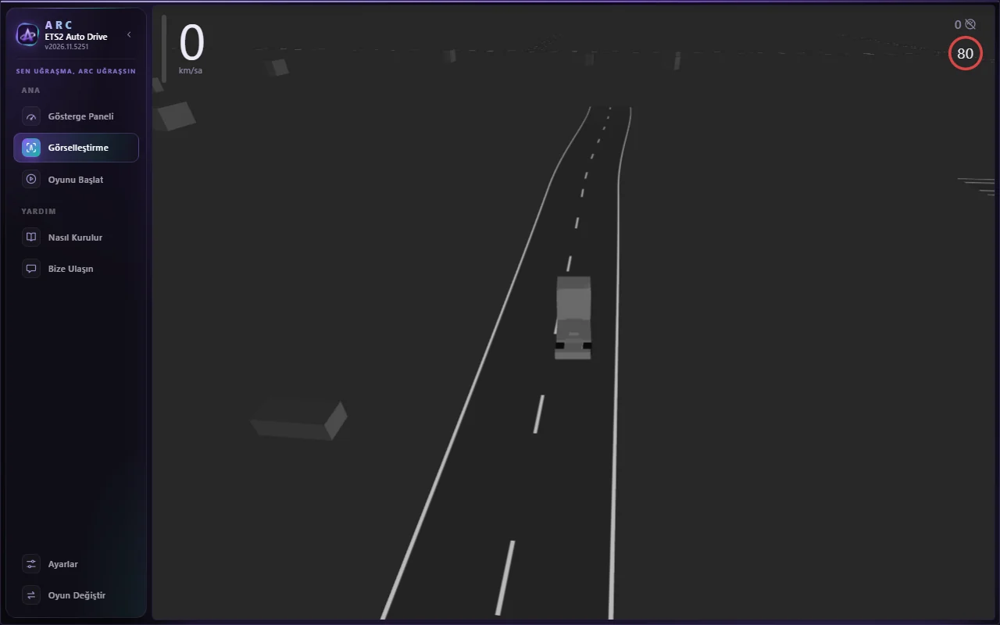
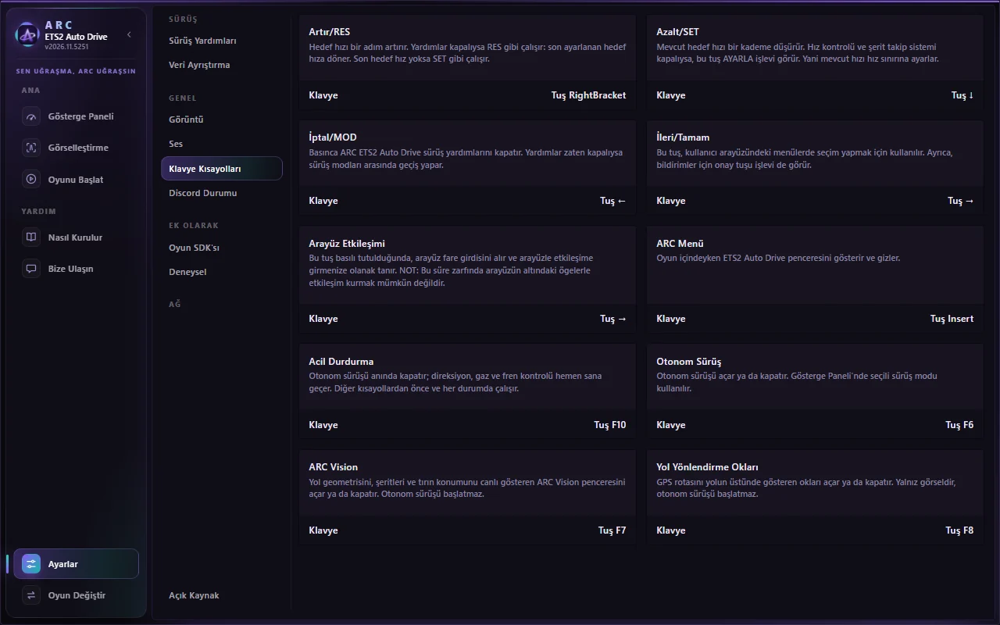

YENİ SÜRÜM · v2.9.6 · ETS2 / ATS
ETS2 Auto Drive yenilendi.
Baştan tasarlanan arayüz, tek tuşla kontrol edilen özellikler ve yolun üstünde seni yönlendiren oklar. Açtığın an hazır: gerekli sistemler kendiliğinden kurulur, tercihlerin hatırlanır.



🧭 Yol yönlendirme okları👁 ARC Vision⌨ F6 · F7 · F8 · F10 kısayolları🛑 Öncelikli acil durdurma
⚙ Otomatik hazırlanan sistemler🎮 Discord'da ARC durumu🇹🇷 Tamamen Türkçe